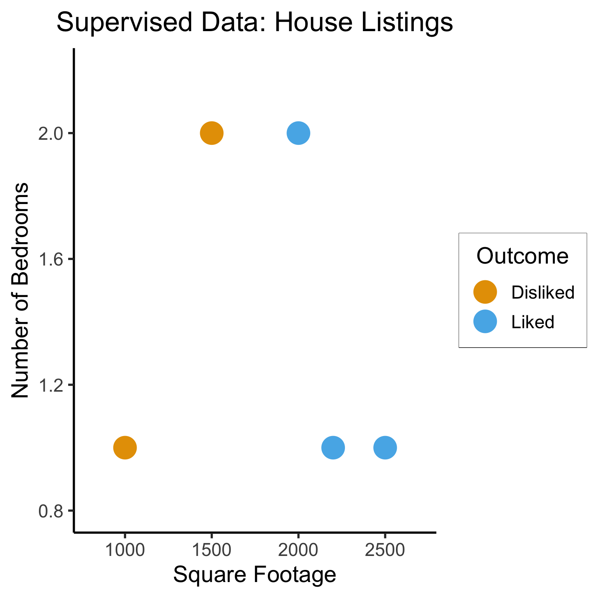
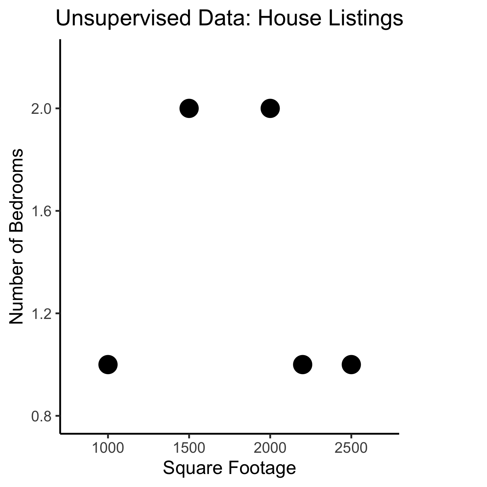
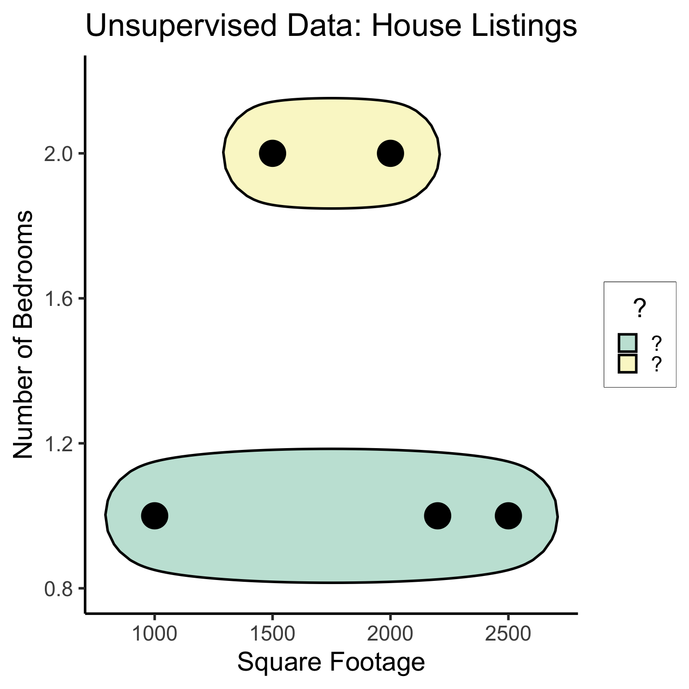
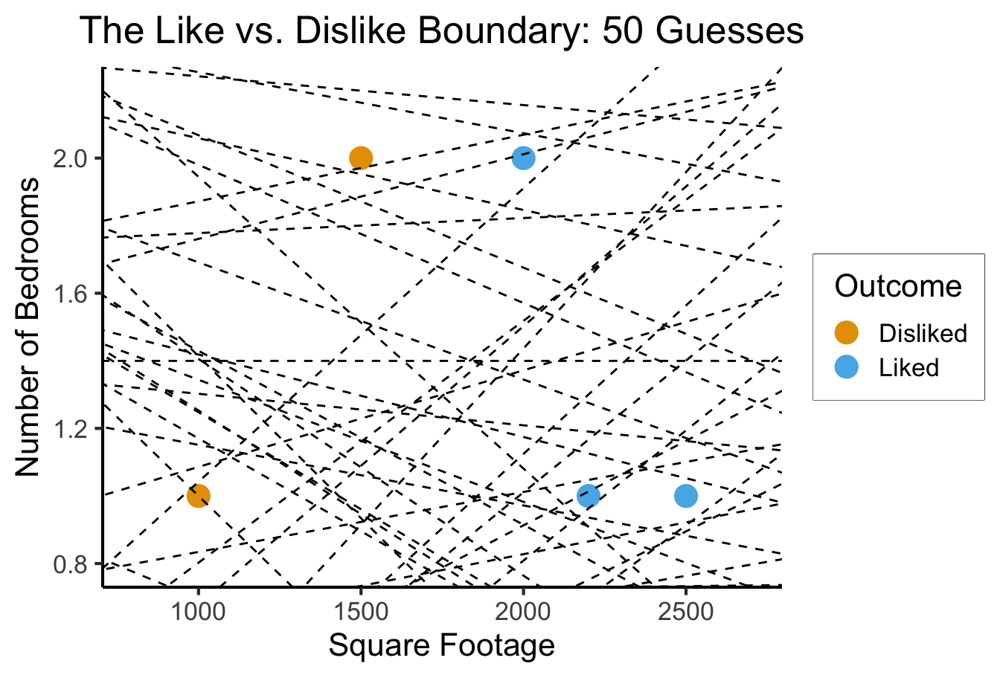
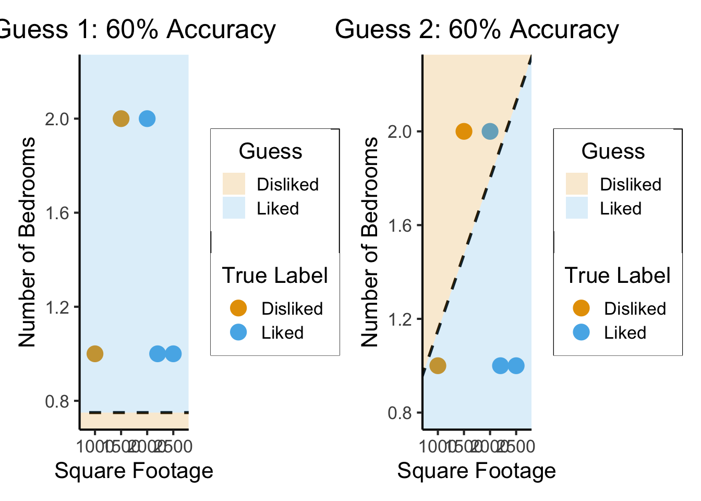
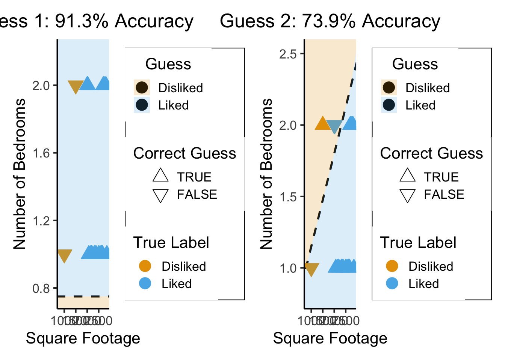
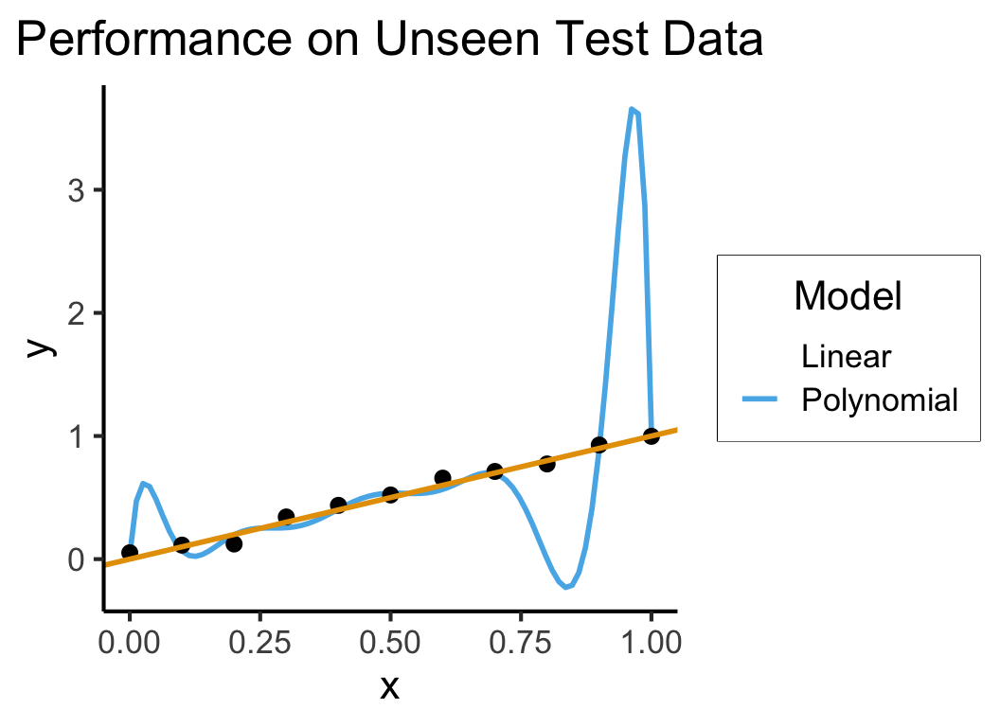
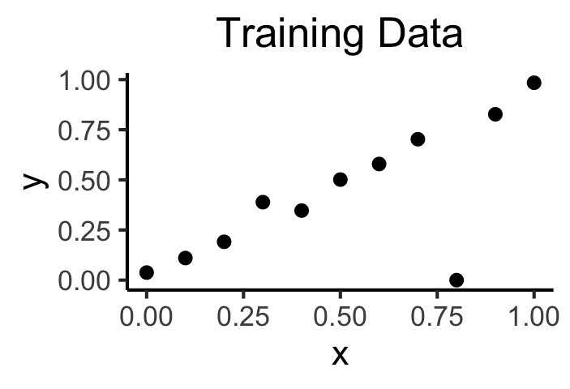
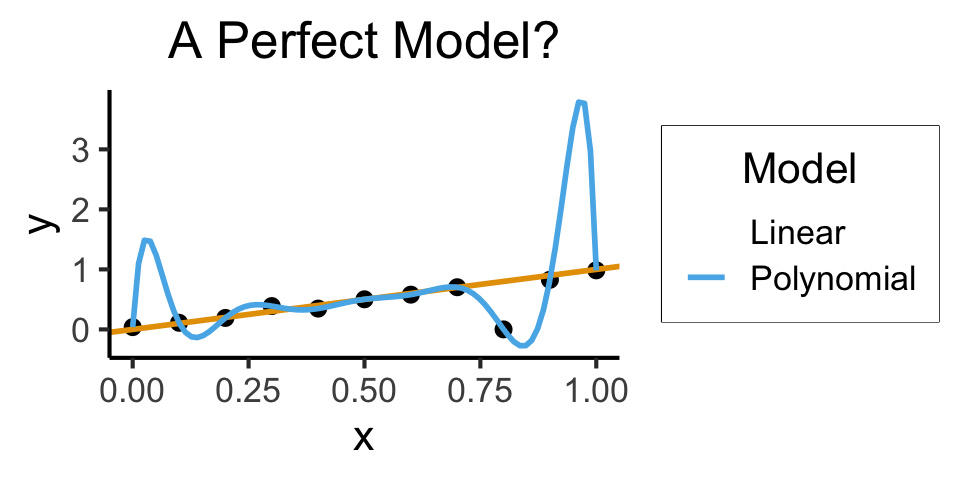
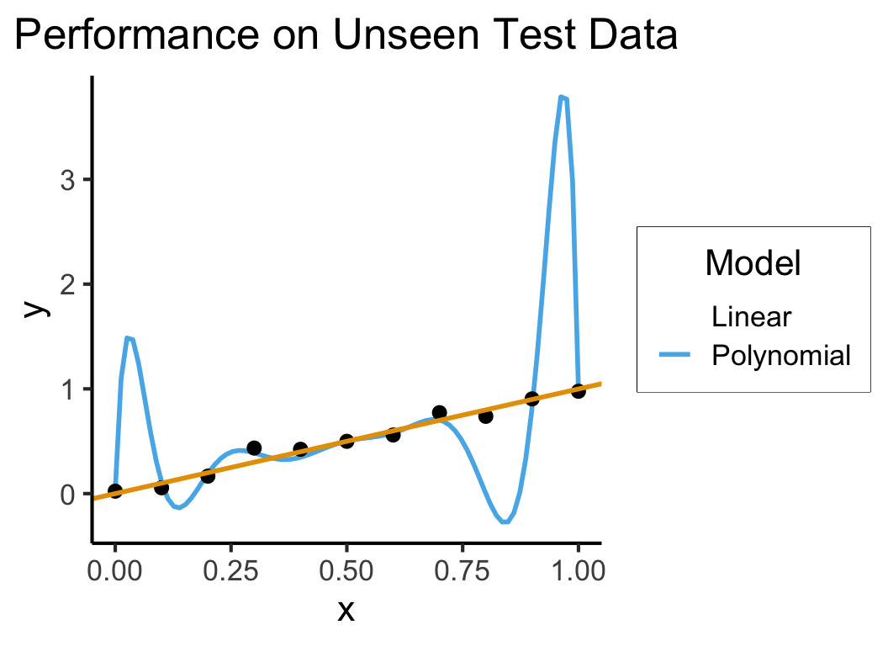

source("../../dsan-globals/_globals.r")Extra Slides: A Slightly Deeper Dive Into Machine Learning
DSAN5000: Data Science and Analytics
(Addendum to Week 07)
Extra Writeups
Supervised vs. Unsupervised Learning
Supervised Learning: You want the computer to learn the existing pattern of how you are classifying1 observations
- Discovering the relationship between properties of data and outcomes
- Example (Binary Classification): I look at homes on Zillow, saving those I like to folder A and don’t like to folder B
- Example (Regression): I assign a rating of 0-100 to each home
- In both cases: I ask the computer to learn my schema (how I classify)
Unsupervised Learning: You want the computer to find patterns in a dataset, without any prior classification info
- Typically: grouping or clustering observations based on shared properties
- Example (Clustering): I save all the used car listings I can find, and ask the computer to “find a pattern” in this data, by clustering similar cars together
Dataset Structures
Supervised Learning: Dataset has both explanatory variables (“features”) and response variables (“labels”)
sup_data <- tibble::tribble(
~home_id, ~sqft, ~bedrooms, ~rating,
0, 1000, 1, "Disliked",
1, 2000, 2, "Liked",
2, 2500, 1, "Liked",
3, 1500, 2, "Disliked",
4, 2200, 1, "Liked"
)
sup_data# A tibble: 5 × 4
home_id sqft bedrooms rating
<dbl> <dbl> <dbl> <chr>
1 0 1000 1 Disliked
2 1 2000 2 Liked
3 2 2500 1 Liked
4 3 1500 2 Disliked
5 4 2200 1 Liked Unsupervised Learning: Dataset has only explanatory variables (“features”)
unsup_data <- tibble::tribble(
~home_id, ~sqft, ~bedrooms,
0, 1000, 1,
1, 2000, 2,
2, 2500, 1,
3, 1500, 2,
4, 2200, 1
)
unsup_data# A tibble: 5 × 3
home_id sqft bedrooms
<dbl> <dbl> <dbl>
1 0 1000 1
2 1 2000 2
3 2 2500 1
4 3 1500 2
5 4 2200 1Dataset Structures: Visualized
ggplot(sup_data, aes(x=sqft, y=bedrooms, color=rating)) +
geom_point(size = g_pointsize * 2) +
labs(
title = "Supervised Data: House Listings",
x = "Square Footage",
y = "Number of Bedrooms",
color = "Outcome"
) +
expand_limits(x=c(800,2700), y=c(0.8,2.2)) +
dsan_theme("half")
library(dplyr)
Attaching package: 'dplyr'The following objects are masked from 'package:stats':
filter, lagThe following objects are masked from 'package:base':
intersect, setdiff, setequal, union# To force a legend
unsup_grouped <- unsup_data |> mutate(big=bedrooms > 1)
unsup_grouped[['big']] <- factor(unsup_grouped[['big']], labels=c("?1","?2"))
ggplot(unsup_grouped, aes(x=sqft, y=bedrooms, fill=big)) +
geom_point(size = g_pointsize * 2) +
labs(
x = "Square Footage",
y = "Number of Bedrooms",
fill = "?"
) +
dsan_theme("half") +
expand_limits(x=c(800,2700), y=c(0.8,2.2)) +
ggtitle("Unsupervised Data: House Listings") +
theme(legend.background = element_rect(fill="white", color="white"), legend.box.background = element_rect(fill="white"), legend.text = element_text(color="white"), legend.title = element_text(color="white"), legend.position = "right") +
scale_fill_discrete(labels=c("?","?")) +
#scale_color_discrete(values=c("white","white"))
scale_color_manual(name=NULL, values=c("white","white")) +
#scale_color_manual(values=c("?1"="white","?2"="white"))
guides(fill = guide_legend(override.aes = list(shape = NA)))
Different Goals
ggplot(sup_data, aes(x=sqft, y=bedrooms, color=rating)) +
geom_point(size = g_pointsize * 2) +
labs(
title = "Supervised Data: House Listings",
x = "Square Footage",
y = "Number of Bedrooms",
color = "Outcome"
) +
dsan_theme("half") +
expand_limits(x=c(800,2700), y=c(0.8,2.2)) +
geom_vline(xintercept = 1750, linetype="dashed", color = "black", size=1) +
annotate('rect', xmin=-Inf, xmax=1750, ymin=-Inf, ymax=Inf, alpha=.2, fill=cbPalette[1]) +
annotate('rect', xmin=1750, xmax=Inf, ymin=-Inf, ymax=Inf, alpha=.2, fill=cbPalette[2])Warning: Using `size` aesthetic for lines was deprecated in ggplot2 3.4.0.
ℹ Please use `linewidth` instead.
#geom_rect(aes(xmin=-Inf, xmax=Inf, ymin=0, ymax=Inf, alpha=.2, fill='red'))library(ggforce)
ggplot(unsup_grouped, aes(x=sqft, y=bedrooms)) +
#scale_color_brewer(palette = "PuOr") +
geom_mark_ellipse(expand=0.1, aes(fill=big), size = 1) +
geom_point(size=g_pointsize * 2) +
labs(
x = "Square Footage",
y = "Number of Bedrooms",
fill = "?"
) +
dsan_theme("half") +
ggtitle("Unsupervised Data: House Listings") +
#theme(legend.position = "none") +
#theme(legend.title = text_element("?"))
expand_limits(x=c(800,2700), y=c(0.8,2.2)) +
scale_fill_manual(values=c(cbPalette[3],cbPalette[4]), labels=c("?","?"))
#scale_fill_manual(labels=c("?","?"))The “Learning” in Machine Learning
- Given these datasets, how do we learn the patterns?
- Naïve idea: Try random lines (each forming a decision boundary), pick “best” one
x_min <- 0
x_max <- 3000
y_min <- -1
y_max <- 3
rand_y0 <- runif(50, min=y_min, max=y_max)
rand_y1 <- runif(50, min=y_min, max=y_max)
rand_slope <- (rand_y1 - rand_y0)/(x_max - x_min)
rand_intercept <- rand_y0
rand_lines <- tibble::tibble(id=1:50, slope=rand_slope, intercept=rand_intercept)
#ggplot() +
# geom_abline(data=rand_lines, aes(slope=slope, #intercept=intercept)) +
# xlim(0,3000) +
# ylim(0,2) +
# dsan_theme()ggplot(sup_data, aes(x=sqft, y=bedrooms, color=rating)) +
geom_point(size=g_pointsize) +
labs(
title = "The Like vs. Dislike Boundary: 50 Guesses",
x = "Square Footage",
y = "Number of Bedrooms",
color = "Outcome"
) +
dsan_theme() +
expand_limits(x=c(800,2700), y=c(0.8,2.2)) +
geom_abline(data=rand_lines, aes(slope=slope, intercept=intercept), linetype="dashed")
- What parameters are we choosing when we draw a random line? Random curve?
What Makes a “Good”/“Best” Guess?
- What’s your intuition? How about accuracy… 🤔
line_data <- tibble::tribble(
~id, ~slope, ~intercept,
0, 0, 0.75,
1, 0.00065, 0.5
)
data_range <- 800:2700
ribbon_range <- c(-Inf,data_range,Inf)
f1 <- function(x) { return(0*x + 0.75) }
f1_data <- tibble::tibble(line_x=ribbon_range,line_y=c(f1(700),f1(data_range),f1(3100)))
g1_plot <- ggplot(data=(line_data %>% filter(id==0))) +
geom_abline(aes(slope=slope, intercept=intercept), linetype="dashed", size=1) +
ggtitle("Guess 1: 60% Accuracy") +
geom_point(data=sup_data, aes(x=sqft, y=bedrooms, color=rating), size=g_pointsize) +
geom_ribbon(data=f1_data, aes(x=line_x, ymin=-Inf, ymax=line_y, fill="Disliked"), alpha=0.2) +
geom_ribbon(data=f1_data, aes(x=line_x, ymin=line_y, ymax=Inf, fill="Liked"), alpha=0.2) +
labs(
x = "Square Footage",
y = "Number of Bedrooms",
color = "True Label"
) +
dsan_theme() +
expand_limits(x=data_range, y=c(0.8,2.2)) +
scale_fill_manual(values=c("Liked"=cbPalette[2],"Disliked"=cbPalette[1]), name="Guess")library(patchwork)
f2 <- function(x) { return(0.00065*x + 0.5) }
f2_data <- tibble::tibble(line_x=ribbon_range,line_y=c(f2(710),f2(data_range),f2(Inf)))
g2_plot <- ggplot(data=(line_data %>% filter(id==1))) +
geom_abline(aes(slope=slope, intercept=intercept), linetype="dashed", size=1) +
ggtitle("Guess 2: 60% Accuracy") +
geom_point(data=sup_data, aes(x=sqft, y=bedrooms, color=rating), size=g_pointsize) +
labs(
x = "Square Footage",
y = "Number of Bedrooms",
color = "True Label"
) +
geom_ribbon(data=f2_data, aes(x=line_x, ymin=-Inf, ymax=line_y, fill="Liked"), alpha=0.2) +
geom_ribbon(data=f2_data, aes(x=line_x, ymin=line_y, ymax=Inf, fill="Disliked"), alpha=0.2) +
dsan_theme() +
expand_limits(x=data_range, y=c(0.8,2.2)) +
scale_fill_manual(values=c("Liked"=cbPalette[2],"Disliked"=cbPalette[1]), name="Guess")
g1_plot + g2_plot
So… what’s wrong here?
What’s Wrong with Accuracy?
gen_homes <- function(n) {
rand_sqft <- runif(n, min=2000, max=3000)
rand_bedrooms <- sample(c(1,2), size=n, prob=c(0.5,0.5), replace=TRUE)
rand_ids <- 1:n
rand_rating <- "Liked"
rand_tibble <- tibble::tibble(home_id=rand_ids, sqft=rand_sqft, bedrooms=rand_bedrooms, rating=rand_rating)
return(rand_tibble)
}
fake_homes <- gen_homes(18)
fake_sup_data <- dplyr::bind_rows(sup_data, fake_homes)
line_data <- tibble::tribble(
~id, ~slope, ~intercept,
0, 0, 0.75,
1, 0.00065, 0.5
)
f1 <- function(x) { return(0*x + 0.75) }
f2 <- function(x) { return(0.00065*x + 0.5) }
# And check accuracy
fake_sup_data <- fake_sup_data %>% mutate(boundary1=f1(sqft)) %>% mutate(guessDislike1 = bedrooms < boundary1) %>% mutate(correct1 = ((rating=="Disliked") & (guessDislike1)) | (rating=="Liked") & (!guessDislike1))
fake_sup_data <- fake_sup_data %>% mutate(boundary2=f2(sqft)) %>% mutate(guessDislike2 = bedrooms > boundary2) %>% mutate(correct2 = ((rating=="Disliked") & (guessDislike2)) | (rating=="Liked") & (!guessDislike2))
data_range <- 800:2700
ribbon_range <- c(-Inf,data_range,Inf)
f1_data <- tibble::tibble(line_x=ribbon_range,line_y=c(f1(700),f1(data_range),f1(3200)))
g1_plot <- ggplot(data=(line_data %>% filter(id==0))) +
geom_abline(aes(slope=slope, intercept=intercept), linetype="dashed", size=1) +
ggtitle("Guess 1: 91.3% Accuracy") +
geom_point(data=fake_sup_data, aes(x=sqft, y=bedrooms, fill=rating, color=rating, shape=factor(correct1, levels=c(TRUE,FALSE))), size=g_pointsize) +
scale_shape_manual(values=c(24, 25)) +
geom_ribbon(data=f1_data, aes(x=line_x, ymin=-Inf, ymax=line_y, fill="Disliked"), alpha=0.2) +
geom_ribbon(data=f1_data, aes(x=line_x, ymin=line_y, ymax=Inf, fill="Liked"), alpha=0.2) +
labs(
x = "Square Footage",
y = "Number of Bedrooms",
color = "True Label",
shape = "Correct Guess"
) +
dsan_theme() +
expand_limits(x=data_range, y=c(0.8,2.2)) +
scale_fill_manual(values=c("Liked"=cbPalette[2],"Disliked"=cbPalette[1]), name="Guess")
f2_data <- tibble::tibble(line_x=ribbon_range,line_y=c(f2(700),f2(data_range),f2(3100)))
g2_plot <- ggplot(data=(line_data %>% filter(id==1))) +
geom_abline(aes(slope=slope, intercept=intercept), linetype="dashed", size=1) +
ggtitle("Guess 2: 73.9% Accuracy") +
geom_point(data=fake_sup_data, aes(x=sqft, y=bedrooms, fill=rating, color=rating, shape=factor(correct2, levels=c(TRUE,FALSE))), size=g_pointsize) +
scale_shape_manual(values=c(24, 25)) +
labs(
x = "Square Footage",
y = "Number of Bedrooms",
color = "True Label",
shape = "Correct Guess"
) +
geom_ribbon(data=f2_data, aes(x=line_x, ymin=-Inf, ymax=line_y, fill="Liked"), alpha=0.2) +
geom_ribbon(data=f2_data, aes(x=line_x, ymin=line_y, ymax=Inf, fill="Disliked"), alpha=0.2) +
dsan_theme() +
expand_limits(x=data_range, y=c(0.8,2.2)) +
scale_fill_manual(values=c("Liked"=cbPalette[2],"Disliked"=cbPalette[1]), name="Guess")
g1_plot + g2_plot
The (Oversimplified) Big Picture
- A model: some representation of something in the world
\[ \begin{align*} \mathsf{Correspondence}(y_{obs}, \theta) &\equiv P(y = y_{obs}, \theta) \\ P(y = y_{obs}, \theta) &= P(y=y_{obs} \; | \; \theta)P(\theta) \\ &\propto P\left(y = y_{obs} \; | \; \theta\right)\ldots \implies \text{(maximize this!)} \\ \end{align*} \]
Measuring Errors: F1 Score
- How can we reward guesses which best discriminate between classes?
\[ \begin{align*} \mathsf{Precision} &= \frac{\# \text{true positives}}{\# \text{predicted positive}} = \frac{tp}{tp+fp} \\[1.5em] \mathsf{Recall} &= \frac{\# \text{true positives}}{\# \text{positives in data}} = \frac{tp}{tp+fn} \\[1.5em] F_1 &= 2\frac{\mathsf{Precision} \cdot \mathsf{Recall}}{\mathsf{Precision} + \mathsf{Recall}} = \mathsf{HMean}(\mathsf{Precision}, \mathsf{Recall}) \end{align*} \]
- Think about: How does this address/fix issue with accuracy?
Here \(\mathsf{HMean}\) is the Harmonic Mean function: see appendix slide or Wikipedia.
Measuring Errors: The Loss Function
- What about regression?
- No longer just “true prediction good, false prediction bad”
- We have to quantify how bad the guess is! Then we can scale the penalty accordingly: \(\text{penalty} \propto \text{badness}\)
- Enter Loss Functions! Just distances (using distance metrics you’ve already seen) between the true value and our guess:
- Squared Error \(L^2(y_{obs}, y_{pred}) = (y_{obs} - y_{pred})^2\)
- Kullback-Leibler Divergence if guessing distributions
Calculus Rears its Ugly Head
- Neural networks use derivatives/gradients to improve their predictions given a particular loss function.
base <-
ggplot() +
xlim(-5, 5) +
ylim(0, 25) +
labs(
x = "Y[obs] - Y[pred]",
y = "Prediction Badness (Loss)"
) +
dsan_theme()
my_fn <- function(x) { return(x^2) }
my_deriv2 <- function(x) { return(4*x - 4) }
my_derivN4 <- function(x) { return(-8*x - 16) }
base + geom_function(fun = my_fn, color=cbPalette[1], linewidth=1) +
geom_point(data=as.data.frame(list(x=2,y=4)), aes(x=x,y=y), color=cbPalette[2], size=g_pointsize/2) +
geom_function(fun = my_deriv2, color=cbPalette[2], linewidth=1) +
geom_point(data=as.data.frame(list(x=-4,y=16)), aes(x=x,y=y), color=cbPalette[3], size=g_pointsize/2) +
geom_function(fun = my_derivN4, color=cbPalette[3], linewidth=1)Warning: Removed 60 rows containing missing values or values outside the scale range
(`geom_function()`).Warning: Removed 70 rows containing missing values or values outside the scale range
(`geom_function()`).
my_fake_deriv <- function(x) { return(-x) }
my_fake_deriv2 <- function(x) { return(-(1/2)*x + 1/2) }
my_fake_deriv3 <- function(x) { return(-(1/4)*x + 3/4) }
d=data.frame(x=c(-2,-1,0,1,2), y=c(1,0,0,1,1))
base <- ggplot() +
xlim(-5,5) +
ylim(0,2) +
labs(
x="Y[obs] - Y[pred]",
y="Prediction Badness (Loss)"
) +
geom_step(data=d, mapping=aes(x=x, y=y), linewidth=1) +
dsan_theme()
base + geom_point(data=as.data.frame(list(x=2,y=4)), aes(x=x,y=y), color=cbPalette[2], size=g_pointsize/2) +
geom_function(fun = my_fake_deriv, color=cbPalette[2], linewidth=1) +
geom_function(fun = my_fake_deriv2, color=cbPalette[3], linewidth=1) +
geom_function(fun = my_fake_deriv3, color=cbPalette[4], linewidth=1) +
geom_point(data=as.data.frame(list(x=-1,y=1)), aes(x=x,y=y), color=cbPalette[2], size=g_pointsize/2) +
annotate("text", x = -0.7, y = 1.1, label = "?", size=6)Warning: Removed 1 row containing missing values or values outside the scale range
(`geom_point()`).Warning: Removed 80 rows containing missing values or values outside the scale range
(`geom_function()`).Warning: Removed 60 rows containing missing values or values outside the scale range
(`geom_function()`).Warning: Removed 20 rows containing missing values or values outside the scale range
(`geom_function()`).
- Can we just use the \(F_1\) score?
\[ \frac{\partial F_1(weights)}{\partial weights} = \ldots \; ? \; \ldots 💀 \]
Quantifying Discrete Loss
- We can quantify a differentiable discrete loss by asking the algorithm how confident it is
- Closer to 0 \(\implies\) more confident that the true label is 0
- Closer to 1 \(\implies\) more confident that the true label is 1
\[ \mathcal{L}_{CE}(y_{pred}, y_{obs}) = -(y_{obs}\log(y_{pred}) + (1-y_{obs})\log(1-y_{pred})) \]
y_pred <- seq(from = 0, to = 1, by = 0.001)
compute_ce <- function(y_p, y_o) { return(-(y_o * log(y_p) + (1-y_o)*log(1-y_p))) }
ce0 <- compute_ce(y_pred, 0)
ce1 <- compute_ce(y_pred, 1)
ce0_data <- tibble::tibble(y_pred=y_pred, y_obs=0, ce=ce0)
ce1_data <- tibble::tibble(y_pred=y_pred, y_obs=1, ce=ce1)
ce_data <- dplyr::bind_rows(ce0_data, ce1_data)
ggplot(ce_data, aes(x=y_pred, y=ce, color=factor(y_obs))) +
geom_line(linewidth=1) +
labs(
title="Binary Cross-Entropy Loss",
x = "Predicted Value",
y = "Loss",
color = "Actual Value"
) +
dsan_theme() +
ylim(0,6)Warning: Removed 2 rows containing missing values or values outside the scale range
(`geom_line()`).
Loss Function \(\implies\) Ready to Learn!
Once we’ve chosen a loss function, the learning algorithm has what it needs to proceed with the actual learning
Notation: Bundle all the model’s parameters together into \(\theta\)
The goal: \[ \min_{\theta} \mathcal{L}(y_{obs}, y_{pred}(\theta)) \]
What would this look like for the random-lines approach?
Is there a more efficient way?
Calculus Strikes Again
- tldr: The slope of a function tells us how to get to a minimum (why a minimum rather than the minimum?)
- Derivative (gradient) = “direction of sharpest decrease”
- Think of hill climbing! Let \(\ell_t \in L\) be your location at time \(t\), and \(Alt(\ell)\) be the altitude at a location \(\ell\)
- Gradient descent for \(\ell^* = \max_{\ell \in L} Alt(\ell)\): \[ \ell_{t+1} = \ell_t + \gamma\nabla Alt(\ell_t),\ t\geq 0. \]
- While top of mountain = good, Loss is bad: we want to find the bottom of the “loss crater”
- \(\implies\) we do the opposite: subtract \(\gamma\nabla Alt(\ell_t)\)
Good and Bad News
- Universal Approximation Theorem
- Neural networks can represent any function mapping one Euclidean space to another
- (Neural Turing Machines:)

Figure from @schmidinger_exploring_2019
- Weierstrass Approximation Theorem
- (Polynomials could already represent any function)
\[ f \in C([a,b],[a,b]) \] \[ \implies \forall \epsilon > 0, \exists p \in \mathbb{R}[x] : \] \[ \forall x \in [a, b] \; \left|f(x) − p(x)\right| < \epsilon \]
- Implications for machine learning?
So What’s the Issue?
x <- seq(from = 0, to = 1, by = 0.1)
n <- length(x)
eps <- rnorm(n, 0, 0.04)
y <- x + eps
# But make one big outlier
midpoint <- ceiling((3/4)*n)
y[midpoint] <- 0
of_data <- tibble::tibble(x=x, y=y)
# Linear model
lin_model <- lm(y ~ x)
# But now polynomial regression
poly_model <- lm(y ~ poly(x, degree = 10, raw=TRUE))
#summary(model)ggplot(of_data, aes(x=x, y=y)) +
geom_point(size=g_pointsize/2) +
labs(
title = "Training Data",
color = "Model"
) +
dsan_theme()
ggplot(of_data, aes(x=x, y=y)) +
geom_point(size=g_pointsize/2) +
geom_abline(aes(intercept=0, slope=1, color="Linear"), linewidth=1, show.legend = FALSE) +
stat_smooth(method = "lm",
formula = y ~ poly(x, 10, raw=TRUE),
se = FALSE, aes(color="Polynomial")) +
labs(
title = "A Perfect Model?",
color = "Model"
) +
dsan_theme()
- Higher \(R^2\) = Better Model? Lower \(RSS\)?
- Linear Model:
summary(lin_model)$r.squared[1] 0.5269359get_rss(lin_model)[1] 0.5075188- Polynomial Model:
summary(poly_model)$r.squared[1] 1get_rss(poly_model)[1] 0Generalization
- Training Accuracy: How well does it fit the data we can see?
- Test Accuracy: How well does it generalize to future data?
# Data setup
x_test <- seq(from = 0, to = 1, by = 0.1)
n_test <- length(x_test)
eps_test <- rnorm(n_test, 0, 0.04)
y_test <- x_test + eps_test
of_data_test <- tibble::tibble(x=x_test, y=y_test)
lin_y_pred_test <- predict(lin_model, as.data.frame(x_test))
#lin_y_pred_test
lin_resids_test <- y_test - lin_y_pred_test
#lin_resids_test
lin_rss_test <- sum(lin_resids_test^2)
#lin_rss_test
# Lin R2 = 1 - RSS/TSS
tss_test <- sum((y_test - mean(y_test))^2)
lin_r2_test <- 1 - (lin_rss_test / tss_test)
#lin_r2_test
# Now the poly model
poly_y_pred_test <- predict(poly_model, as.data.frame(x_test))
poly_resids_test <- y_test - poly_y_pred_test
poly_rss_test <- sum(poly_resids_test^2)
#poly_rss_test
# RSS
poly_r2_test <- 1 - (poly_rss_test / tss_test)
#poly_r2_testggplot(of_data, aes(x=x, y=y)) +
stat_smooth(method = "lm",
formula = y ~ poly(x, 10, raw = TRUE),
se = FALSE, aes(color="Polynomial")) +
dsan_theme() +
geom_point(data=of_data_test, aes(x=x_test, y=y_test), size=g_pointsize/2) +
geom_abline(aes(intercept=0, slope=1, color="Linear"), linewidth=1, show.legend = FALSE) +
labs(
title = "Performance on Unseen Test Data",
color = "Model"
) +
dsan_theme()
- Linear Model:
lin_r2_test[1] 0.8366753lin_rss_test[1] 0.1749389- Polynomial Model:
poly_r2_test[1] 0.470513poly_rss_test[1] 0.5671394How to Avoid Overfitting?
- The gist: penalize model complexity
Original optimization: \[ \theta^* = \underset{\theta}{\operatorname{argmin}} \mathcal{L}(y_{obs}, y_{pred}(\theta)) \]
New optimization: \[ \theta^* = \underset{\theta}{\operatorname{argmin}} \left[ \mathcal{L}(y_{obs}, y_{pred}(\theta)) + \mathsf{Complexity}(\theta) \right] \]
- So how do we measure, and penalize, “complexity”?
Regularization: Measuring and Penalizing Complexity
- In the case of polynomials, fairly simple complexity measure: degree of polynomial
\[ \mathsf{Complexity}(y_{pred} = \beta_0 + \beta_1 x + \beta_2 x^2 + \beta_3 x^3) > \mathsf{Complexity}(y_{pred} = \beta_0 + \beta_1 x) \]
- In general machine learning, however, we might not be working with polynomials
- In neural networks, for example, we sometimes toss in millions of features and ask the algorithm to “just figure it out”
- The gist, in the general case, is thus: try to “amplify” the most important features and shrink the rest, so that
\[ \mathsf{Complexity} \propto \frac{|\text{AmplifiedFeatures}|}{|\text{ShrunkFeatures}|} \]
LASSO and Elastic Net Regularization
- Many ways to translate this intuition into math!
- In several fields, however (econ, biostatistics), LASSO4 [@tibshirani_regression_1996] is standard:
\[ \beta^*_{LASSO} = {\underset{\beta}{\operatorname{argmin}}}\left\{{\frac {1}{N}}\left\|y-X\beta \right\|_{2}^{2}+\lambda \|\beta \|_{1}\right\} \]
- Why does this work to penalize complexity? What does the parameter \(\lambda\) do?
- Some known issues with LASSO fixed in extension of the same intuitions: Elastic Net
\[ \beta^*_{EN} = {\underset {\beta }{\operatorname {argmin} }}\left\{ \|y-X\beta \|^{2}_2+\lambda _{2}\|\beta \|^{2}+\lambda _{1}\|\beta \|_{1} \right\} \]
- (Ensures a unique global minimum! Note that \(\lambda_2 = 0, \lambda_1 = 1 \implies \beta^*_{LASSO} = \beta^*_{EN}\))
Training vs. Test Data
Cross-Validation
- The idea that good models generalize well is crucial!
- What if we could leverage this insight to optimize over our training data?
- The key: Validation Sets
Hyperparameters
- The unspoken (but highly consequential!) “settings” for our learning procedure (that we haven’t optimized via gradient descent)
- There are several we’ve already seen – can you name them?
- Unsupervised Clustering: The number of clusters we want (\(K\))
- Gradient Descent: The step size \(\gamma\)
- LASSO/Elastic Net: \(\lambda\)
- The train/validation/test split!
Hyperparameter Selection
- Every model comes with its own hyperparameters:
- Neural Networks: Number of layers, number of nodes per layer
- Decision Trees: Maximum tree depth, max number of features to include
- Topic Models: Number of topics, document/topic priors
- So, how do we choose?
- Often more art than science
- Principled, universally applicable, but slow: grid search
- Specific methods for specific algorithms: ADAM [@kingma_adam_2017] for Neural Network learning rates)
Appendix: Harmonic Mean
- \(\mathsf{HMean}\) is the harmonic mean, an alternative to the standard (arithmetic) mean
- Penalizes greater “gaps” between precision and recall: if precision is 0 and recall is 1, for example, their arithmetic mean is 0.5 while their harmonic mean is 0.
- For the curious: given numbers \(X = \{x_1, \ldots, x_n\}\), \(\mathsf{HMean}(X) = \frac{n}{\sum_{i=1}^nx_i^{-1}}\)
Footnotes
Whether standard classification (sorting observations into bins) or regression (assigning a real number to each observation)↩︎
Computer scientists implicitly assume a Correspondence Theory of Truth, hence the choice of name↩︎
Thanks to Bayes’ Rule, mathematically we can always convert between the two: \(P(A|B) = \frac{P(B|A)P(A)}{P(B)}\)↩︎
Least Absolute Shrinkage and Selection Operator↩︎